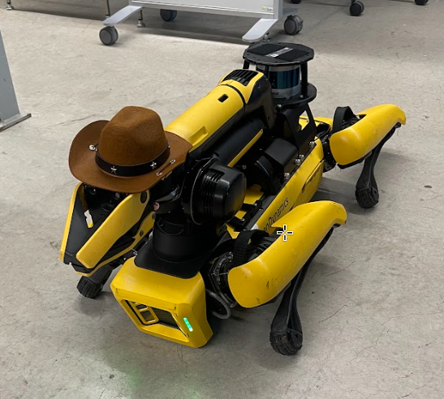
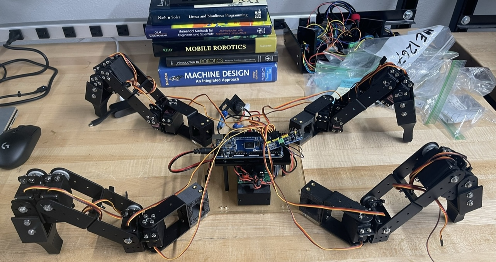
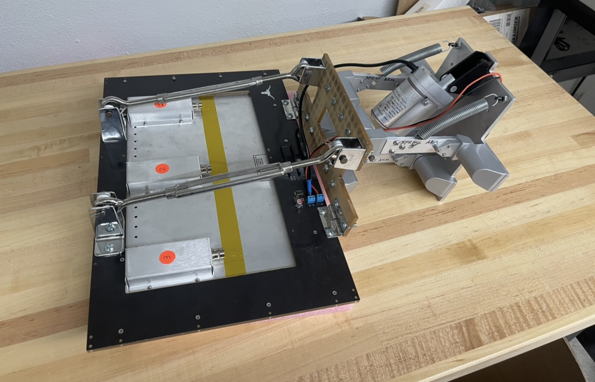

Featured Projects

Gamma Seeker
Integrated a Boston Dynamics Spot robot with an H3D Compton camera to autonomously localize a gamma source.
More project details →


Alpha Trailer Module
Built a trailer module that has an air-proportional detector. Mounted to a differential drive robot to autonomously detect alpha emitting material/
More project details →
Shadow Flask
Integrated a Raspberry Pi and a USB Camera to stream video feed over to a private network using Tailscale. Video feed is accessible with a mobile device using an internet browser.
More project details →
Object Detection Project
Integrate Shadow Flask to detect a cat and track its movements. Addtionally, have the ability to shine a laser light in the room to play with the cat remotely.
More project details →